Pipeline DESeq2 applied to the dataset GSE300073 (infection of the human colonic organoids by the filoviruses Ebola and Marburg)
Filoviruses, particularly Ebola virus (EBOV)
and Marburg virus (MARV), cause severe hemorrhagic
fever with high mortality rates in humans. Despite their
similar genomic structure and classification within the
same family (Filoviridae), these viruses exhibit distinct
epidemiological patterns and clinical severities.
EBOV outbreaks show rapid progression to multi-organ
failure, characterized by severe gastrointestinal
symptoms including hemorrhagic diarrhea.
MARV infections, while equally lethal, sometimes present with different
inflammatory kinetics and tissue tropism patterns.
The intestinal epithelium (tissue that covers the body's
surface or lines the interior of all hollow organs) is a
critical target tissue for filoviral infection. It serves
as both a potential viral replication site and a critical
barrier that leads to the characteristic secretory diarrhea
and fluid loss observed in infected patients.
To analyse how EBOV and MARV differ in their manipulation
of epithelial cell biology is essential for understanding
their divergent pathogenic strategies.
link to the article : https://pubmed.ncbi.nlm.nih.gov/41284734/
knitr::opts_chunk$set(echo = TRUE, warning = FALSE, message = FALSE) #(for the markdown output)
library(DESeq2)library(tidyverse) # dplyr, ggplot2, etc...library(pheatmap)
library(RColorBrewer)
library(patchwork) #(to combine the figs)
cat("\nlibraries loaded: DESeq2, tidyverse, pheatmap, RColorBrewer, patchwork\n")##
## libraries loaded: DESeq2, tidyverse, pheatmap, RColorBrewer, patchwork# paths, use the path of your own files
counts_path <- "/Users/corentinjeantils/Documents/EFREI_2026/genomics/test1/GSE300073_counts.csv"
coldata_path <- "/Users/corentinjeantils/Documents/EFREI_2026/genomics/test1/metadata.csv"
output_dir <- "/Users/corentinjeantils/Documents/EFREI_2026/genomics/test1/output"
figures <- "/Users/corentinjeantils/Documents/EFREI_2026/genomics/test1/output/figures"
tables <- "/Users/corentinjeantils/Documents/EFREI_2026/genomics/test1/output/tables"
if (!dir.exists(output_dir)) dir.create(output_dir, recursive = TRUE)
if (!dir.exists(figures)) dir.create(figures, recursive = TRUE)
if (!dir.exists(tables)) dir.create(tables, recursive = TRUE)
print(paste("output directory at:", output_dir))## [1] "output directory at: /Users/corentinjeantils/Documents/EFREI_2026/genomics/test1/output"#Loading RNAseq counts
# Reads the CSV filen columns are delimited by ";" and the first row contains the column names.
counts_raw <- read.delim(counts_path, sep = ";", header = TRUE,
check.names = FALSE, stringsAsFactors = FALSE)
cat("\n------------------------\n")cat("\nStructure of the raw counts data:\n")##
## Structure of the raw counts data:str(counts_raw[, 1:5])## 'data.frame': 58409 obs. of 5 variables:
## $ Genes : chr "DDX11L1" "WASH7P" "MIR6859.1" "MIR1302.2HG" ...
## $ MG-MA-13: int 0 44 6 0 0 0 0 0 0 0 ...
## $ MG-MA-14: int 0 51 2 0 0 0 0 0 0 0 ...
## $ MG-MA-15: int 0 44 5 0 0 0 0 0 0 1 ...
## $ MG-MA-16: int 0 50 5 0 0 0 0 0 0 0 ...dim(counts_raw)## [1] 58409 19cat("\nNumber of duplicated gene symbols in the raw counts data:\n")##
## Number of duplicated gene symbols in the raw counts data:sum(duplicated(counts_raw$Genes))## [1] 0cat("\nif there are duplicated gene symbols, we aggregate them\n")##
## if there are duplicated gene symbols, we aggregate themif (sum(duplicated(counts_raw$Genes)) > 0) {
counts_raw <- counts_raw %>%
group_by(Genes) %>%
summarise(across(everything(), sum), .groups = "drop")
}
#DESeq2 requires 1 row = 1 unique gene
#At this stage, we are preparing the data to answer the question :
#"what genes change when intestinal organoids
#are infected with one of the filoviruses ?"
counts_mat <- as.data.frame(counts_raw)
rownames(counts_mat) <- counts_mat$Genes
counts_mat$Genes <- NULL
#The gene names are already in the row names.
# columns must be numeric (raw counts)
counts_mat[] <- lapply(counts_mat, as.integer)
counts_mat <- as.matrix(counts_mat)
#Conversion to integers
#because RNAseq produce counts, DESeq2 expects integer values
cat("\n------------------------\n")cat("Genes :",
nrow(counts_mat),
"| Samples :",
ncol(counts_mat),
"\n")## Genes : 58409 | Samples : 18#the most important part !
# load-metadata
coldata <- read.delim(coldata_path,
sep = ";",
header = TRUE,
stringsAsFactors = FALSE)
str(coldata)## 'data.frame': 18 obs. of 5 variables:
## $ sample : chr "MG-MA-13" "MG-MA-14" "MG-MA-15" "MG-MA-16" ...
## $ virus : chr "Mock" "Mock" "Mock" "Mock" ...
## $ dpi : int 1 1 1 3 3 3 1 1 1 3 ...
## $ organoid : chr "HCO" "HCO" "HCO" "HCO" ...
## $ replicate: int 1 2 3 1 2 3 1 2 3 1 ...head(coldata)## sample virus dpi organoid replicate
## 1 MG-MA-13 Mock 1 HCO 1
## 2 MG-MA-14 Mock 1 HCO 2
## 3 MG-MA-15 Mock 1 HCO 3
## 4 MG-MA-16 Mock 3 HCO 1
## 5 MG-MA-17 Mock 3 HCO 2
## 6 MG-MA-18 Mock 3 HCO 3# The columns used in the DESeq2 design MUST be factors
# (DPI = days post infection)
coldata$virus <- factor(coldata$virus, levels = c("Mock", "EBOV", "MARV"))
coldata$dpi <- factor(coldata$dpi, levels = c("1", "3"))
coldata$organoid <- factor(coldata$organoid)
coldata$replicate<- factor(coldata$replicate)
rownames(coldata) <- coldata$sample
## check alignmen
# CRITICAL step: DESeq2 requires an EXACT match (order + names)
# between colnames(counts_mat) and rownames(coldata)
print('Check alignment between count matrix and metadata:')## [1] "Check alignment between count matrix and metadata:"print(setdiff(colnames(counts_mat), rownames(coldata)))## character(0)print(setdiff(rownames(coldata), colnames(counts_mat)))## character(0)#(both must be empty)
# Defensive reordering of coldata based on the order of counts
coldata <- coldata[colnames(counts_mat), ]
cat("\n------------------------\n")# Final check (must return TRUE)
print('Final check: colnames(counts_mat) == rownames(coldata) ?')## [1] "Final check: colnames(counts_mat) == rownames(coldata) ?"print(all(rownames(coldata) == colnames(counts_mat)))## [1] TRUE# summary design
table(coldata$virus, coldata$dpi)##
## 1 3
## Mock 3 3
## EBOV 3 3
## MARV 3 3# build dds group design
# The paper compares EBOV vs Mock and MARV vs Mock SEPARATELY
# at 1 dpi and 3 dpi (4 distinct comparisons; see Fig. 4F, which shows
# 2 different Venn diagrams depending on the day). Using "group," we can
# extract exactly these 4 comparisons while keeping the 18
# samples together, allowing DESeq2 to estimate technical variability
# ("dispersion") based on the maximum amount of data -> greater statistical power
# than if the table were split into 2 sub-tables (9 samples each).
# We will create a "group" factor that combines virus + dpi into a single
# variable with 6 levels (Mock_1, Mock_3, EBOV_1, EBOV_3, MARV_1, MARV_3).
coldata$group <- factor(
paste(coldata$virus, coldata$dpi, sep = "_"),
levels = c("Mock_1", "Mock_3", "EBOV_1", "EBOV_3", "MARV_1", "MARV_3")
)
table(coldata$group)##
## Mock_1 Mock_3 EBOV_1 EBOV_3 MARV_1 MARV_3
## 3 3 3 3 3 3#now we creates a DESeq2 object from the count data and sample information
dds <- DESeqDataSetFromMatrix(
countData = counts_mat,
colData = coldata,
design = ~ group
)
cat("\n")#DESeq2 determine which genes show a change in expression between two conditions based on RNA-seq data.
#Raw counts can't mean anything because sequencing depth can vary
#between samples, for example one sample with 10 million reads and another with 20 million
#won't have the same level of expression, but it would be artificial.
#DESeq2 normalizes the data : it calculates a scaling factor
# for each sample to make the counts comparable.
# then it uses a statistical model based on the negative binomial distribution to
# estimate the natural variability of each gene and test if the observed
# difference between conditions is too large to be attributed to chance.
#So the result is a table containing for each gene a log2 fold change
# (indicating the size of the change) and a p-value measuring statistical significance.
#For example, a gene strongly induced by infection will show a high log2FC and a very low p-value, whereas a
#stable gene will show a log2FC close to zero and a non-significant p-value.
# filter low counts
# We remove genes with very low expression : they do not provide good information,
# add noise, and will probably slow down the tests.
# we keep a gene if it has at least 10 reads in at least
# 3 samples (= the size of a biological group in this case).
keep <- rowSums(counts(dds) >= 10) >= 3
dds <- dds[keep, ]
cat("Genes conserved after filtering :", nrow(dds), "/", nrow(counts_mat),
"(", round(100 * nrow(dds) / nrow(counts_mat), 1), "%)\n")## Genes conserved after filtering : 18602 / 58409 ( 31.8 %)# check viral transcripts
# Checks if the viral genes (EBOV/MARV) are present in the matrix
# If there is we could maybe replicate the panels D/E from Fig. 4 of the paper
viral_hits <- grep("EBOV|MARV|^NP$|^VP24$|^VP35$|^VP40$|^GP$|^L$",
rownames(counts_mat), value = TRUE, ignore.case = TRUE)
print("Viral transcripts found in the count matrix:")## [1] "Viral transcripts found in the count matrix:"print(viral_hits)## [1] "MARVELD2" "MARVELD1" "MARVELD3" "NP" "VP35" "VP40"
## [7] "GP" "VP24" "L" "NP_marv" "VP35_marv" "VP40_marv"
## [13] "GP_marv" "VP30_marv" "VP24_marv" "L_marv"# run deseq2
# This is where DESeq2 performs the statistical :
# It normalizes the counts between samples
# It estimates the dispersion gene by gene
# It fits a generalized linear model and tests
# each gene for the contrasts we will request
dds <- DESeq(dds)## estimating size factors
## estimating dispersions
## gene-wise dispersion estimates
## mean-dispersion relationship
## final dispersion estimates
## fitting model and testingresultsNames(dds) # list of model coefficients## [1] "Intercept" "group_Mock_3_vs_Mock_1" "group_EBOV_1_vs_Mock_1"
## [4] "group_EBOV_3_vs_Mock_1" "group_MARV_1_vs_Mock_1" "group_MARV_3_vs_Mock_1"# extract paper aligned contrasts :
# EBOV vs Mock and MARV vs Mock at 1 dpi (-> left part of Fig 4 F/G)
# EBOV vs Mock and MARV vs Mock at 3 dpi (-> right part of Fig 4 F/H)
res_EBOV_d1 <- results(dds, contrast = c("group", "EBOV_1", "Mock_1"), alpha = 0.05)
res_MARV_d1 <- results(dds, contrast = c("group", "MARV_1", "Mock_1"), alpha = 0.05)
res_EBOV_d3 <- results(dds, contrast = c("group", "EBOV_3", "Mock_3"), alpha = 0.05)
res_MARV_d3 <- results(dds, contrast = c("group", "MARV_3", "Mock_3"), alpha = 0.05)
cat("\n")#quick summary : how many significant up/down regulated genes there are
cat("\n=== EBOV vs Mock, 1 dpi ===\n"); summary(res_EBOV_d1)##
## === EBOV vs Mock, 1 dpi ===##
## out of 18602 with nonzero total read count
## adjusted p-value < 0.05
## LFC > 0 (up) : 465, 2.5%
## LFC < 0 (down) : 444, 2.4%
## outliers [1] : 227, 1.2%
## low counts [2] : 3906, 21%
## (mean count < 24)
## [1] see 'cooksCutoff' argument of ?results
## [2] see 'independentFiltering' argument of ?resultscat("\n=== MARV vs Mock, 1 dpi ===\n"); summary(res_MARV_d1)##
## === MARV vs Mock, 1 dpi ===##
## out of 18602 with nonzero total read count
## adjusted p-value < 0.05
## LFC > 0 (up) : 336, 1.8%
## LFC < 0 (down) : 254, 1.4%
## outliers [1] : 227, 1.2%
## low counts [2] : 5936, 32%
## (mean count < 54)
## [1] see 'cooksCutoff' argument of ?results
## [2] see 'independentFiltering' argument of ?resultscat("\n=== EBOV vs Mock, 3 dpi ===\n"); summary(res_EBOV_d3)##
## === EBOV vs Mock, 3 dpi ===##
## out of 18602 with nonzero total read count
## adjusted p-value < 0.05
## LFC > 0 (up) : 888, 4.8%
## LFC < 0 (down) : 1186, 6.4%
## outliers [1] : 227, 1.2%
## low counts [2] : 1082, 5.8%
## (mean count < 9)
## [1] see 'cooksCutoff' argument of ?results
## [2] see 'independentFiltering' argument of ?resultscat("\n=== MARV vs Mock, 3 dpi ===\n"); summary(res_MARV_d3)##
## === MARV vs Mock, 3 dpi ===##
## out of 18602 with nonzero total read count
## adjusted p-value < 0.05
## LFC > 0 (up) : 874, 4.7%
## LFC < 0 (down) : 1546, 8.3%
## outliers [1] : 227, 1.2%
## low counts [2] : 0, 0%
## (mean count < 2)
## [1] see 'cooksCutoff' argument of ?results
## [2] see 'independentFiltering' argument of ?results# vst transform (Variance Stabilizing Transformation)
# blind = FALSE : the transformation accounts for the design to
# estimate the mean-variance trend
vst_data <- vst(dds, blind = FALSE)
# In fact, DESeq and vst perform two distinct functions:
# it identifies differentially expressed genes
# and generates metrics such as log2 fold changes
# and p-values, highlighting genes that show significant
# changes between conditions. Once the VST object contains
# these estimates, VST transforms the counts, applying a
# method designed to stabilize variance and make the distances
# between samples more representative.
# remove false positive viral genes
# Confirmed real viral transcripts in the count matrix
viral_genes_ebov <- c("NP", "VP35", "VP40", "VP30", "GP", "VP24", "L")
viral_genes_marv <- c("NP_marv", "VP35_marv", "VP40_marv", "GP_marv",
"VP30_marv", "VP24_marv", "L_marv")
# (MARVELD1/2/3 excluded: human genes, false positives from the previous grep)
cat("Confirmed viral transcripts in EBOV :", length(viral_genes_ebov), "\n")## Confirmed viral transcripts in EBOV : 7cat("Confirmed viral transcripts in MARV :", length(viral_genes_marv), "\n")## Confirmed viral transcripts in MARV : 7# classify DEGs both thresholds (Differentially Expressed Genes)
# Each gene is classified as UP / DOWN / NS based on 2 definitions :
#
# - "paper" : RAW p-value < 0.05 AND |log2FC| > 2 (= Fig 4F from the paper (i put it below))
# - "standard" : ADJUSTED p-value < 0.05 AND |log2FC| > 1 (= standard stringent threshold)
#
# Why keep both? The "paper" threshold allows us to compare
# our figures directly with those in the article. The "standard" threshold
# is the one we will use for the volcano plot / heatmap / GO enrichment,
# as it is statistically more defensible in a report.
# caption of the fig4 of the paper :
# "(A) Schematic overview of the bulk RNA-seq experimental
# workflow in iPSC-derived proximal human intestinal organoids
# (HIOs). Illustrations created in BioRender. Muhlberger, E.
# (2025) https://BioRender.com/nncviy6.
# (B and C) Principal component analysis (PCA) of the distal iPSC-derived
# HCO transcriptomic response to EBOV and MARV infections at 1 and 3 dpi.
# (D) Read counts of EBOV transcripts at 1 (light blue) and 3 (dark blue) dpi.
# (E) Read counts of MARV transcripts at 1 (light green) and 3 (dark green) dpi.
# (F) Venn diagrams illustrating the number of
# common and unique significantly differentially expressed genes (DEGs)
# in MARV and EBOV-infected iPSC-derived HCOs at different infection
# time points. Genes that were upregulated (LogFC > 2, p < 0.05) and
# downregulated (LogFC < -2, p < 0.05) at each time point (1 and 3 dpi)
# are shown. Gene set enrichment analysis (GSEA) was performed using
# the Hallmark gene sets on the top DEG sets in distal HCOs at (G) 1 dpi
# and (H) 3 dpi, compared to mock-infected controls, for both EBOV and
# MARV infections. Striped bars indicate non-significant results, while
# solid bars represent statistically significant findings (p < 0.05)."
classify_deg <- function(res, label) {
df <- as.data.frame(res)
df$gene <- rownames(df)
# Remove genes for which DESeq2 could not calculate a p-value
df <- df[!is.na(df$padj) & !is.na(df$pvalue), ]
df$dir_paper <- "NS"
df$dir_paper[df$pvalue < 0.05 & df$log2FoldChange > 2] <- "UP"
df$dir_paper[df$pvalue < 0.05 & df$log2FoldChange < -2] <- "DOWN"
df$dir_std <- "NS"
df$dir_std[df$padj < 0.05 & df$log2FoldChange > 1] <- "UP"
df$dir_std[df$padj < 0.05 & df$log2FoldChange < -1] <- "DOWN"
cat("\n===", label, "===\n")
cat("Paper threshold (p<0.05, |log2FC|>2) -> UP:",
sum(df$dir_paper == "UP"), " | DOWN:", sum(df$dir_paper == "DOWN"), "\n")
cat("Standard threshold (padj<0.05, |log2FC|>1) -> UP:",
sum(df$dir_std == "UP"), " | DOWN:", sum(df$dir_std == "DOWN"), "\n")
df
}
deg_EBOV_d1 <- classify_deg(res_EBOV_d1, "EBOV vs Mock, 1 dpi")##
## === EBOV vs Mock, 1 dpi ===
## Paper threshold (p<0.05, |log2FC|>2) -> UP: 109 | DOWN: 3
## Standard threshold (padj<0.05, |log2FC|>1) -> UP: 281 | DOWN: 19deg_MARV_d1 <- classify_deg(res_MARV_d1, "MARV vs Mock, 1 dpi")##
## === MARV vs Mock, 1 dpi ===
## Paper threshold (p<0.05, |log2FC|>2) -> UP: 41 | DOWN: 2
## Standard threshold (padj<0.05, |log2FC|>1) -> UP: 131 | DOWN: 17deg_EBOV_d3 <- classify_deg(res_EBOV_d3, "EBOV vs Mock, 3 dpi")##
## === EBOV vs Mock, 3 dpi ===
## Paper threshold (p<0.05, |log2FC|>2) -> UP: 32 | DOWN: 1137
## Standard threshold (padj<0.05, |log2FC|>1) -> UP: 184 | DOWN: 967deg_MARV_d3 <- classify_deg(res_MARV_d3, "MARV vs Mock, 3 dpi")##
## === MARV vs Mock, 3 dpi ===
## Paper threshold (p<0.05, |log2FC|>2) -> UP: 91 | DOWN: 1118
## Standard threshold (padj<0.05, |log2FC|>1) -> UP: 268 | DOWN: 997norm_counts <- counts(dds, normalized = TRUE)
print(norm_counts[viral_genes_ebov, coldata$sample[coldata$virus == "Mock"]])## MG-MA-13 MG-MA-14 MG-MA-15 MG-MA-16 MG-MA-17 MG-MA-18
## NP 0 0 0 0 1.028727 311.82800
## VP35 0 0 0 0 0.000000 289.81661
## VP40 0 0 0 0 0.000000 135.73689
## VP30 0 0 0 0 0.000000 128.39976
## GP 0 0 0 0 0.000000 315.49656
## VP24 0 0 0 0 0.000000 80.70842
## L 0 0 0 0 0.000000 0.00000# viral expression plot
# counts(dds, normalized = TRUE) : counts corrected for sequencing depth
# (a sample sequenced at twice the depth has twice as many
# reads for everythig)
norm_counts <- counts(dds, normalized = TRUE)
ebov_mat <- norm_counts[rownames(norm_counts) %in% viral_genes_ebov, , drop = FALSE]
marv_mat <- norm_counts[rownames(norm_counts) %in% viral_genes_marv, , drop = FALSE]
# Function to convert counts to "long" format (1 row = 1 gene x 1 sample)
build_viral_df <- function(mat, gene_set_label) {
as.data.frame(t(mat)) %>%
tibble::rownames_to_column("sample") %>%
tidyr::pivot_longer(-sample, names_to = "gene", values_to = "count") %>%
dplyr::left_join(coldata %>% dplyr::select(sample, virus, dpi), by = "sample") %>%
dplyr::mutate(gene_set = gene_set_label,
gene = gsub("_marv$", "", gene))
}
viral_df <- dplyr::bind_rows(
build_viral_df(ebov_mat, "Transcripts EBOV"),
build_viral_df(marv_mat, "Transcripts MARV")
)
viral_df$dpi_label <- paste0(viral_df$dpi, " dpi")
# Mean + standard deviation by group (virus x dpi x gene)
viral_summary <- viral_df %>%
dplyr::group_by(gene_set, gene, virus, dpi_label) %>%
dplyr::summarise(mean_count = mean(count), sd_count = sd(count), .groups = "drop")
fig_viral <- ggplot(viral_summary,
aes(x = dpi_label, y = mean_count + 1, fill = virus)) +
geom_col(position = position_dodge(0.8), width = 0.7,
color = "black", linewidth = 0.2) +
geom_errorbar(
aes(ymin = pmax(mean_count - sd_count, 0) + 1,
ymax = mean_count + sd_count + 1),
position = position_dodge(0.8), width = 0.25
) +
facet_grid(gene_set ~ gene, scales = "free_y") +
scale_y_log10() +
scale_fill_manual(values = c(Mock = "grey60", EBOV = "#4477AA", MARV = "#228833")) +
labs(
title = "Expression of the viral transcripts EBOV and MARV",
subtitle = "Normalized counts DESeq2 (log10 scale, +1 to handle zeros)",
x = NULL, y = "Normalized count (log10 + 1)", fill = "Virus"
) +
theme_bw(base_size = 11) +
theme(strip.text = element_text(face = "bold"),
axis.text.x = element_text(angle = 30, hjust = 1))
ggsave("viral_expression.png", fig_viral, path = figures, width = 14, height = 6, dpi = 300, bg = "white")
fig_viral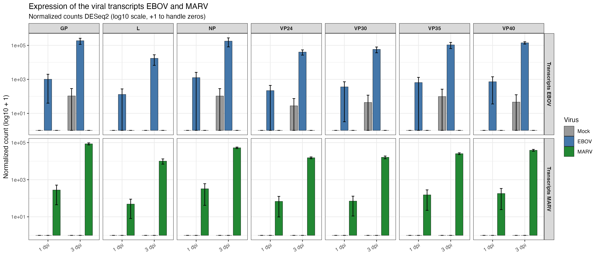
#An increase in viral expression is observed between
#1 dpi and 3 dpi (a gain of 2 to 3 orders of magnitude),
#consistent with active viral replication, and—importantly—high
#specificity: EBOV transcripts are absent in MARV samples and
#vice versa, which validates the mapping.
#problem :
#In theory, a mock (uninfected) sample should not
#have any reads aligning to EBOV/MARV viral genes.
#The metadata confirms that MG-MA-18 is indeed mock
# there are no visible data entry errors.
#let us plot a quick PCA to see if this sample is an outlier or not.
pca_plot <- plotPCA(vst_data, intgroup = c("virus", "dpi"))using ntop=500 top features by varianceggsave("pca_plot.png", pca_plot, path = figures, width = 8, height = 6, dpi = 300, bg = "white")
pca_plot#Even the isolated mock point stays very far from the EBOV:3 cluster
#(the khaki points at the bottom right, around PC1 = 17–19, PC2 = -6 to -15).
#If MG-MA-18 had truly been infected with EBOV at 3 dpi,
#we would expect to see it shift toward the EBOV:3
#cluster. However, in this case, the isolated Mock
#point moves in the opposite direction (very positive PC2), not toward EBOV at all.
#This suggests the technical noise hypothesis
pca_data <- plotPCA(vst_data, intgroup = c("virus", "dpi"), returnData = TRUE)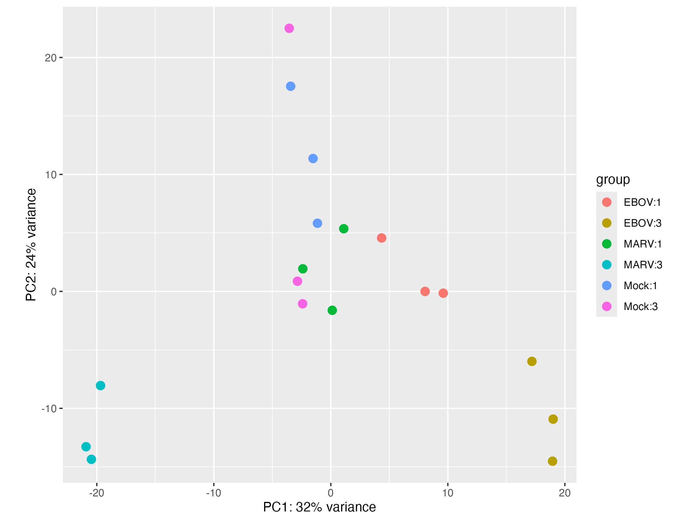
pca_data$sample <- rownames(pca_data)
print(pca_data[order(pca_data$dpi, pca_data$virus), c("sample","virus","dpi","PC1","PC2")])## sample virus dpi PC1 PC2
## MG-MA-13 MG-MA-13 Mock 1 -1.1432881 5.826545535
## MG-MA-14 MG-MA-14 Mock 1 -3.4332857 17.540633417
## MG-MA-15 MG-MA-15 Mock 1 -1.5207144 11.362008225
## MG-MA-19 MG-MA-19 EBOV 1 8.0558005 -0.001297063
## MG-MA-20 MG-MA-20 EBOV 1 9.6083829 -0.151628943
## MG-MA-21 MG-MA-21 EBOV 1 4.3403274 4.566248934
## MG-MA-25 MG-MA-25 MARV 1 0.1252289 -1.618514317
## MG-MA-26 MG-MA-26 MARV 1 -2.3945264 1.932476427
## MG-MA-27 MG-MA-27 MARV 1 1.1060481 5.359108380
## MG-MA-16 MG-MA-16 Mock 3 -2.4131150 -1.059589710
## MG-MA-17 MG-MA-17 Mock 3 -2.8522817 0.868356562
## MG-MA-18 MG-MA-18 Mock 3 -3.5557645 22.498333122
## MG-MA-22 MG-MA-22 EBOV 3 17.1868692 -5.984094208
## MG-MA-23 MG-MA-23 EBOV 3 19.0000991 -10.922569709
## MG-MA-24 MG-MA-24 EBOV 3 18.9507515 -14.520266341
## MG-MA-28 MG-MA-28 MARV 3 -19.6789544 -8.052693411
## MG-MA-29 MG-MA-29 MARV 3 -20.9192810 -13.282976154
## MG-MA-30 MG-MA-30 MARV 3 -20.4622965 -14.360080746#the table with PC1/PC2 for each sample confirms that the isolated
#point at the top of the graph is indeed MG-MA-18 :
#MG-MA-18 MG-MA-18 Mock 3 -3.5557645 22.498333122
#He has a PC1 of -3.56—right within the
#range seen in the mock data, and far
#away from the EBOV3 samples.
#Let us compare it wit the paper data (fig 4)
#(only the relative separation between groups in a PCA, of course.)
#the Mock points are quite spread out along PC2 with one point reaching 12.3, isolated from the others.
#This is exactly the pattern we observed with our outlier, MG-MA-18
#(PC2 = 22.5)
#This suggests that the high variability of the mock samples along PC2
#isn't an artifact specific to your pipeline, but a genuine characteristic
# of this dataset—which is rather reassuring.
#Paper: PC1 = 19.3%, PC2 = 16.9% total 36.2%
#Me: PC1 = 32%, PC2 = 24% total 56%
# Visually, the separation between groups is cleaner,
# and more variance is concentrated on just two axes.
# I don't know why.
#cleaner version of the pca plot :
print("Visualizing the PCA plot ")pca_data <- plotPCA(vst_data, intgroup = c("virus", "dpi"),
returnData = TRUE, ntop = 500)pct_var <- round(100 * attr(pca_data, "percentVar"), 1)
pca_data$dpi <- factor(pca_data$dpi)
figB <- ggplot(pca_data, aes(PC1, PC2, color = virus, shape = dpi)) +
geom_point(size = 4, alpha = 0.9, stroke = 0.8) +
scale_color_manual(values = c(Mock = "grey50", EBOV = "#E64B8B", MARV = "#7B3FA0")) +
labs(title = "PCA — colored by infection",
x = paste0("PC1 (", pct_var[1], "%)"),
y = paste0("PC2 (", pct_var[2], "%)"), shape = "dpi") +
theme_bw(base_size = 12) + theme(legend.position = "right")
figC <- ggplot(pca_data, aes(PC1, PC2, color = dpi, shape = virus)) +
geom_point(size = 4, alpha = 0.9, stroke = 0.8) +
scale_color_manual(values = c("1" = "#1B9E77", "3" = "#D95F02")) +
labs(title = "PCA — colored by dpi",
x = paste0("PC1 (", pct_var[1], "%)"),
y = paste0("PC2 (", pct_var[2], "%)"), shape = "Virus") +
theme_bw(base_size = 12) + theme(legend.position = "right")
fig_pca <- figB + figC #side by side thanks to patchwork
ggsave("pca_combined.png", fig_pca, path = figures, width = 13, height = 6, dpi = 300, bg = "white")
fig_pca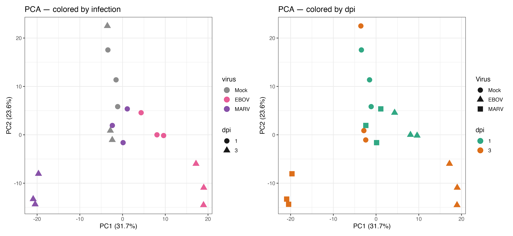
# sample distance heatmap
samp_dist <- dist(t(assay(vst_data)))
samp_mat <- as.matrix(samp_dist)
sample_labels <- paste(coldata$virus, paste0(coldata$dpi, "dpi"),
paste0("r", coldata$replicate), sep = "_")
rownames(samp_mat) <- sample_labels
colnames(samp_mat) <- sample_labels
samp_anno <- data.frame(
Virus = coldata$virus,
DPI = paste0(coldata$dpi, " dpi"),
row.names = sample_labels
)
# pheatmap::pheatmap() with the :: prefix to forces R to use the TRUE
# function from the pheatmap package, regardless of what is loaded/masked later
pheatmap::pheatmap(
mat = samp_mat,
color = colorRampPalette(rev(RColorBrewer::brewer.pal(9, "Blues")))(100),
annotation_col = samp_anno,
annotation_row = samp_anno,
annotation_colors = list(
Virus = c(Mock = "grey50", EBOV = "#E64B8B", MARV = "#7B3FA0"),
DPI = c("1 dpi" = "#1B9E77", "3 dpi" = "#D95F02")
),
clustering_method = "ward.D2",
fontsize = 10,
border_color = "white",
main = "Euclidean distance between samples (VST)",
#filename = "sample_distance.png",
filename = file.path(figures, "sample_distance.png"),
width = 9,
height = 8
)
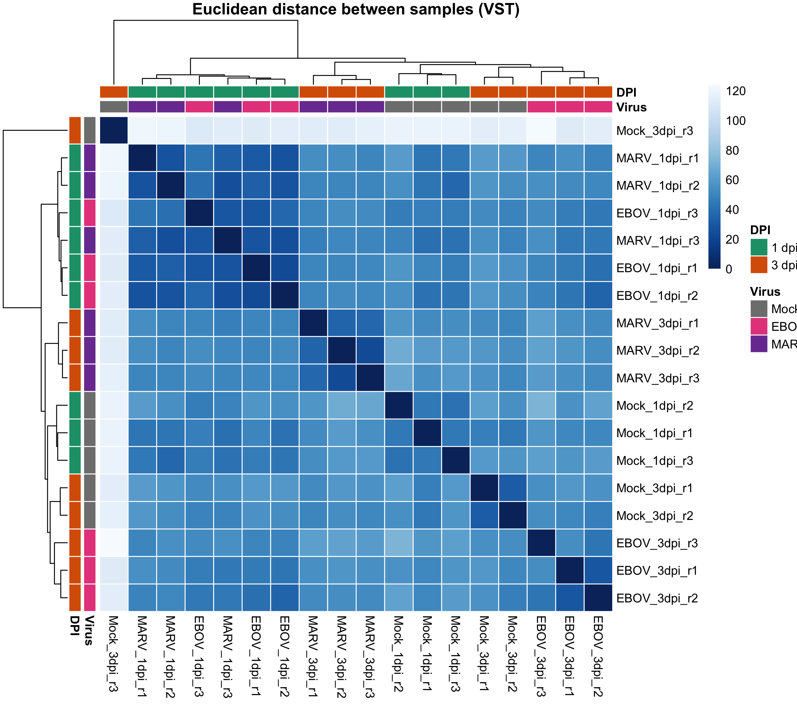
# the paper does not include an inter-sample distance heatmap.
# we have the confirmation of the outlier:
# The Mock_3dpi_r3 row/column (= MG-MA-18)
#is almost entirely white—indicating maximum
#distance from all other samples, including its
#own Mock replicates. This confirms for a third time,
# using a third method, that it is indeed an atypical sample.
#The infected 1 dpi samples cluster together regardless of
# the virus—showing a small distance between MARV_1dpi and
#EBOV_1dpi. This aligns exactly with the text of the paper:
#at 1 dpi, 160 upregulated genes are shared by both viruses
#(compared to only 45 and 144 specific ones; Fig. 4F).
#The Mock samples remain clustered together, with the
#exception of the outlier.
#MARV_3dpi and EBOV_3dpi each form their own compact,
#well-separated cluster, distinct from one another.
#This clearly illustrates the statement in the paper regarding
#"distinct and evolving host responses"—the response becomes
#increasingly virus-specific over time, consistent with the
#divergence in the interferon signal they describe
#(MARV maintains IFN activation, whereas EBOV suppresses
#it at 3 dpi).# Exclude viral genes from host analysis
# Viral transcripts are trivial (present/absent = infected/uninfected)
# and contribute nothing to the analysis of host BIOLOGICAL PATHWAYS. They are
# removed from the result tables used for volcano plots, heatmaps, and GO analysis,
# while keeping res_EBOV_d1 etc. intact for reference if needed.
all_viral_genes <- c(viral_genes_ebov, viral_genes_marv)
strip_viral <- function(res) res[!(rownames(res) %in% all_viral_genes), ]
res_EBOV_d1_host <- strip_viral(res_EBOV_d1)
res_MARV_d1_host <- strip_viral(res_MARV_d1)
res_EBOV_d3_host <- strip_viral(res_EBOV_d3)
res_MARV_d3_host <- strip_viral(res_MARV_d3)
# volcano function
make_volcano <- function(res, contrast_label) {
df <- as.data.frame(res)
df$gene <- rownames(df)
df <- df[!is.na(df$padj), ]
df$direction <- "NS"
df$direction[df$padj < 0.05 & df$log2FoldChange > 2] <- "UP"
df$direction[df$padj < 0.05 & df$log2FoldChange < -2] <- "DOWN"
df$neg_log10_padj <- -log10(df$padj)
top_labels <- df %>%
dplyr::filter(direction != "NS") %>%
dplyr::arrange(padj) %>%
dplyr::slice_head(n = 20) %>%
dplyr::pull(gene)
df$plot_label <- ifelse(df$gene %in% top_labels, df$gene, "")
vol_colors <- c(UP = "#E41A1C", DOWN = "#377EB8", NS = "grey75")
ggplot(df %>% dplyr::arrange(direction),
aes(log2FoldChange, neg_log10_padj, color = direction, label = plot_label)) +
geom_point(alpha = 0.7, size = 1.3) +
geom_hline(yintercept = -log10(0.05), linetype = "dashed", linewidth = 0.3) +
geom_vline(xintercept = c(-1, 1), linetype = "dashed", linewidth = 0.3) +
ggrepel::geom_text_repel(
data = dplyr::filter(df, plot_label != ""),
size = 2.6, fontface = "bold", color = "black",
max.overlaps = 25, segment.size = 0.2
) +
scale_color_manual(values = vol_colors,
labels = c(UP = paste0("Up (", sum(df$direction == "UP"), ")"),
DOWN = paste0("Down (", sum(df$direction == "DOWN"), ")"),
NS = paste0("NS (", sum(df$direction == "NS"), ")"))) +
labs(title = contrast_label,
x = expression(log[2]~"Fold Change"),
y = expression(-log[10]~"(padj)"), color = NULL) +
theme_bw(base_size = 10) +
theme(plot.title = element_text(face = "bold", size = 11),
legend.position = "bottom")
}
v1 <- make_volcano(res_EBOV_d1_host, "EBOV vs Mock — 1 dpi")
v2 <- make_volcano(res_MARV_d1_host, "MARV vs Mock — 1 dpi")
v3 <- make_volcano(res_EBOV_d3_host, "EBOV vs Mock — 3 dpi")
v4 <- make_volcano(res_MARV_d3_host, "MARV vs Mock — 3 dpi")
fig_volcano <- (v1 + v2) / (v3 + v4)
ggsave("volcano_4panels.png", fig_volcano, path = figures, width = 12, height = 10, dpi = 300, bg = "white")
fig_volcano
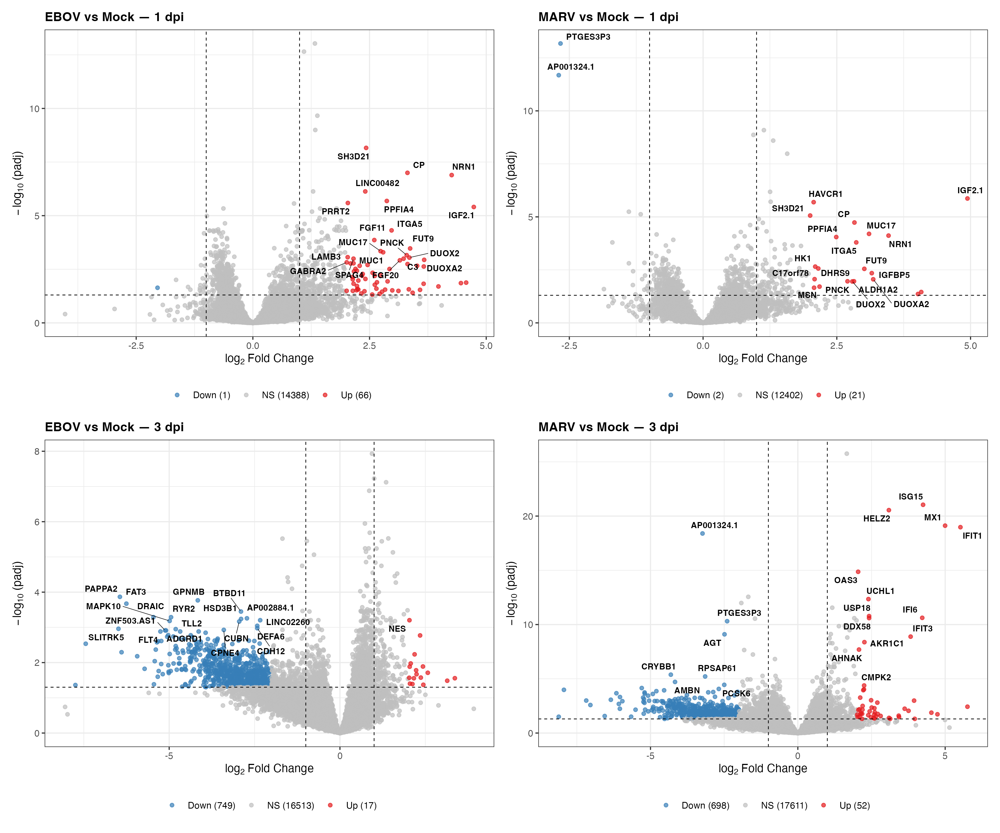
#Volcano plots display the distribution of gene
#expression changes for over 18,000 genes in
#each contrast (Figure 4F). Each point represents
#a gene, positioned according to two criteria:
#fold change (magnitude of change, x-axis) and
#statistical significance (y-axis). Upregulated (red)
# and downregulated (blue) genes appear clearly separated,
#while non-significant genes (gray) occupy the center.
#At 1 dpi:
#One day post-infection, EBOV and MARV induce remarkably
# convergent transcriptional responses. Our data show 66
#upregulated genes for EBOV and 21 for MARV, with minimal
#downregulation in both cases. At this early stage, the cell
# does not yet distinguish the type of virus.
#At 3 dpi: divergence
#Different viral strategies are observed.
#MARV-infected samples show 52 upregulated genes
#(doubled since 1 dpi) and 698 downregulated genes,
#while EBOV samples show 17 upregulated genes (greatly
#decreased since 1 dpi) and 749 downregulated genes.
#The response to MARV is logical; the upregulated genes
#observed are ISGs (interferon-stimulated genes), the cell's
# immune alarm molecules (MX1, IFIT1, ISG15, STAT1, OAS3, IFI6).
#This cluster is clearly visible in the graph and is confirmed in the paper:
#"MARV-infected HCOs showed robust induction of ISGs, including
# OASL, MX1, IFIT1, IFIT2, IFI6, and CXCL10" (page 9, Figure 5B).
#Indeed, we find OAS3, MX1, IFIT1, and IFI6.
#The remaining differences stem from our pipelines:
#the paper uses edgeR + limma, whereas I use DESeq2.
#Conversely, for EBOV:
#17 genes are upregulated while 749 are downregulated
#(compared to 66 upregulated at 1 dpi). This indicates
#a wave of suppression, but—more importantly—we observe
#a massive cluster of downregulation.
#As the paper confirms:
#"EBOV-infected HCOs demonstrated suppression of these
#same pathways" (page 7)
#(HCO = Human Colonic Organoids; the organoids created
#by the researchers)
#The biological interpretation is that MARV employs a
#strategy of direct confrontation: since it cannot evade
# detection, it allows the cell to produce interferon
#and activate ISGs—though these prove insufficient to
#fully block MARV replication (due to other mechanisms).
#EBOV, on the other hand, uses a strategy of camouflage
#and sabotage: its viral proteins block interferon
#production immediately upon detection, thereby
#preventing ISG activation. By suppressing this
#immune alarm, EBOV buys time to replicate.# select top250 de
# for each gene,
# we take the smalles padj among the 4 host comparisons
# (EBOV/MARV x 1dpi/3dpi vs Mock) to capture genes that are strongly DE in
# at least one condition, whether specific to a virus or a time point.
get_padj_df <- function(res, label) {
df <- as.data.frame(res)[, c("padj", "log2FoldChange")]
colnames(df) <- paste0(label, "_", colnames(df))
df$gene <- rownames(res)
df
}
padj_all <- get_padj_df(res_EBOV_d1_host, "EBOV_d1") %>%
dplyr::full_join(get_padj_df(res_MARV_d1_host, "MARV_d1"), by = "gene") %>%
dplyr::full_join(get_padj_df(res_EBOV_d3_host, "EBOV_d3"), by = "gene") %>%
dplyr::full_join(get_padj_df(res_MARV_d3_host, "MARV_d3"), by = "gene")
padj_cols <- grep("_padj$", colnames(padj_all))
padj_all$min_padj <- apply(padj_all[, padj_cols], 1, min, na.rm = TRUE)padj_all$min_padj[is.infinite(padj_all$min_padj)] <- NA
top250 <- padj_all %>%
dplyr::filter(!is.na(min_padj)) %>%
dplyr::arrange(min_padj) %>%
dplyr::slice_head(n = 250) %>%
dplyr::pull(gene)
length(top250)# heatmap top250
vst_mat <- assay(vst_data)[top250, ]
# Z-score per line : we look at the relative profiles of each gene between
# samples (not its absolute level of expression, which varies
# from one gene to another and would visually overwrite the comparisons)
vst_scaled <- t(scale(t(vst_mat)))
vst_scaled[vst_scaled > 3] <- 3
vst_scaled[vst_scaled < -3] <- -3
col_anno <- data.frame(
Virus = coldata$virus,
DPI = paste0(coldata$dpi, " dpi"),
row.names = colnames(vst_scaled)
)
ht_colors <- colorRampPalette(rev(RColorBrewer::brewer.pal(11, "RdBu")))(100)
pheatmap::pheatmap(
vst_scaled,
color = ht_colors,
breaks = seq(-3, 3, length.out = 101),
annotation_col = col_anno,
annotation_colors = list(
Virus = c(Mock = "grey50", EBOV = "#E64B8B", MARV = "#7B3FA0"),
DPI = c("1 dpi" = "#1B9E77", "3 dpi" = "#D95F02")
),
cluster_rows = TRUE,
cluster_cols = TRUE,
clustering_method = "ward.D2",
show_rownames = FALSE,
show_colnames = TRUE,
fontsize = 10,
border_color = "white",
main = "Top 250 host genes DE (min padj, 4 comparisons) — Z-score VST",
width = 9,
height = 8,
filename = file.path(figures, "heatmap_top250_DEG.png"),
)
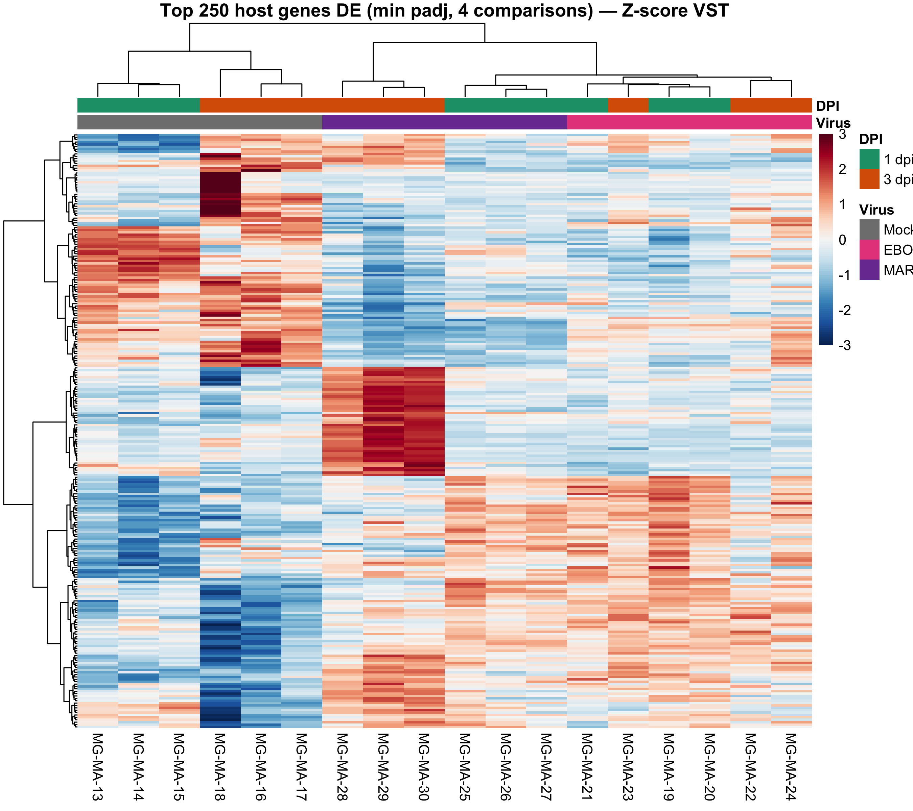
#Unsupervised classification of the 250 most
#differentially expressed host genes reproduces
#the expected biological groupings :
#Mock samples cluster together, whereas samples
# collected 3 days after MARV infection
#(MG-MA-28/29/30) form a distinct group characterized
#by extreme overexpression—consistent with the ISG
#signature identified in the volcano plot analysis
#and corresponding to the ISG group in Figure 5A.
#The outlier control sample at 3 days post-infection
#(MG-MA-18, identified before with PCA)
#also displays a distinct expression profile
#for this set of genes, reinforcing its
#classification as a technical artifact.#The GO enrichment approach was used.
#
#GO (Gene Ontology) enrichment analysis focuses on
#significantly differentially expressed genes and
#provides functional annotation.
#The GO database contains thousands of specific
#categories. The analysis starts with my pre-filtered
#lists—upregulated and downregulated genes (the same
#lists used for the volcano plot)—and identifies
#overrepresented functions.
#GO enrichissement
# prepare libraries enrichment
if (!requireNamespace("org.Hs.eg.db", quietly = TRUE))
BiocManager::install("org.Hs.eg.db")if (!requireNamespace("clusterProfiler", quietly = TRUE))
BiocManager::install("clusterProfiler")if (!requireNamespace("msigdbr", quietly = TRUE))
BiocManager::install("msigdbr")
if (!requireNamespace("enrichplot", quietly = TRUE))
BiocManager::install("enrichplot")
library(org.Hs.eg.db)library(clusterProfiler)library(msigdbr)
library(enrichplot)# map symbols to entrez ids
# GO enrichment and GSEA require Entrez IDs (numbers), not symbols
# We map symbols (row names of our results) to Entrez IDs
map_to_entrez <- function(gene_symbols) {
res_map <- suppressMessages(AnnotationDbi::select(
org.Hs.eg.db,
keys = gene_symbols,
columns = c("SYMBOL", "ENTREZID"),
keytype = "SYMBOL"
))
res_map <- res_map[!duplicated(res_map$SYMBOL), ]
setNames(res_map$ENTREZID, res_map$SYMBOL)
}
symbol_to_entrez <- map_to_entrez(rownames(res_EBOV_d3_host))
# GO enrichment function
# GO enrichment séparé pour UP et DOWN
run_go_enrichment <- function(res, gene_symbol_to_entrez, contrast_label) {
df <- as.data.frame(res)
df$gene <- rownames(df)
df <- df[!is.na(df$padj), ]
# UP genes
up_genes <- df %>%
dplyr::filter(padj < 0.05, log2FoldChange > 1) %>%
dplyr::pull(gene)
up_entrez <- na.omit(gene_symbol_to_entrez[up_genes])
# DOWN genes
down_genes <- df %>%
dplyr::filter(padj < 0.05, log2FoldChange < -1) %>%
dplyr::pull(gene)
down_entrez <- na.omit(gene_symbol_to_entrez[down_genes])
# Universe = all tested genes
universe_entrez <- na.omit(gene_symbol_to_entrez)
cat("\n===", contrast_label, "===\n")
cat("UP genes mapped:", length(up_entrez), "\n")
cat("DOWN genes mapped:", length(down_entrez), "\n")
cat("Universe:", length(universe_entrez), "\n")
# GO enrichment
go_up <- NULL
go_down <- NULL
if (length(up_entrez) >= 5) {
go_up <- suppressMessages(
clusterProfiler::enrichGO(
gene = up_entrez,
universe = universe_entrez,
OrgDb = org.Hs.eg.db,
ont = "BP",
pAdjustMethod = "BH",
pvalueCutoff = 0.05,
qvalueCutoff = 0.20
)
)
}
if (length(down_entrez) >= 5) {
go_down <- suppressMessages(
clusterProfiler::enrichGO(
gene = down_entrez,
universe = universe_entrez,
OrgDb = org.Hs.eg.db,
ont = "BP",
pAdjustMethod = "BH",
pvalueCutoff = 0.05,
qvalueCutoff = 0.20
)
)
}
list(up = go_up, down = go_down)
}
go_ebov_d1 <- run_go_enrichment(res_EBOV_d1_host, symbol_to_entrez, "EBOV vs Mock, 1 dpi")##
## === EBOV vs Mock, 1 dpi ===
## UP genes mapped: 253
## DOWN genes mapped: 18
## Universe: 15003go_marv_d1 <- run_go_enrichment(res_MARV_d1_host, symbol_to_entrez, "MARV vs Mock, 1 dpi")##
## === MARV vs Mock, 1 dpi ===
## UP genes mapped: 118
## DOWN genes mapped: 14
## Universe: 15003go_ebov_d3 <- run_go_enrichment(res_EBOV_d3_host, symbol_to_entrez, "EBOV vs Mock, 3 dpi")##
## === EBOV vs Mock, 3 dpi ===
## UP genes mapped: 144
## DOWN genes mapped: 745
## Universe: 15003go_marv_d3 <- run_go_enrichment(res_MARV_d3_host, symbol_to_entrez, "MARV vs Mock, 3 dpi")##
## === MARV vs Mock, 3 dpi ===
## UP genes mapped: 191
## DOWN genes mapped: 802
## Universe: 15003# GO dotplots function
plot_go <- function(go_obj, direction, contrast_label) {
if (is.null(go_obj) || nrow(go_obj@result) == 0) {
cat(" No enrichment for", direction, "in", contrast_label, "\n")
return(NULL)
}
enrichplot::dotplot(go_obj, showCategory = 15) +
labs(title = paste(contrast_label, "—", direction, "genes")) +
theme_bw(base_size = 10) +
theme(plot.title = element_text(face = "bold", size = 11),
axis.text.y = element_text(size = 8))
}
go_plots <- list()
go_plots$ebov_d1_up <- plot_go(go_ebov_d1$up, "UP", "EBOV 1 dpi")
go_plots$ebov_d1_dn <- plot_go(go_ebov_d1$down, "DOWN", "EBOV 1 dpi")
go_plots$marv_d1_up <- plot_go(go_marv_d1$up, "UP", "MARV 1 dpi")
go_plots$marv_d1_dn <- plot_go(go_marv_d1$down, "DOWN", "MARV 1 dpi")
go_plots$ebov_d3_up <- plot_go(go_ebov_d3$up, "UP", "EBOV 3 dpi")
go_plots$ebov_d3_dn <- plot_go(go_ebov_d3$down, "DOWN", "EBOV 3 dpi")
go_plots$marv_d3_up <- plot_go(go_marv_d3$up, "UP", "MARV 3 dpi")
go_plots$marv_d3_dn <- plot_go(go_marv_d3$down, "DOWN", "MARV 3 dpi")
for (name in names(go_plots)) {
if (!is.null(go_plots[[name]])) {
ggsave(file.path(figures, paste0("GO_", name, ".png")), go_plots[[name]],
width = 10, height = 7, dpi = 300, bg = "white")
}
}
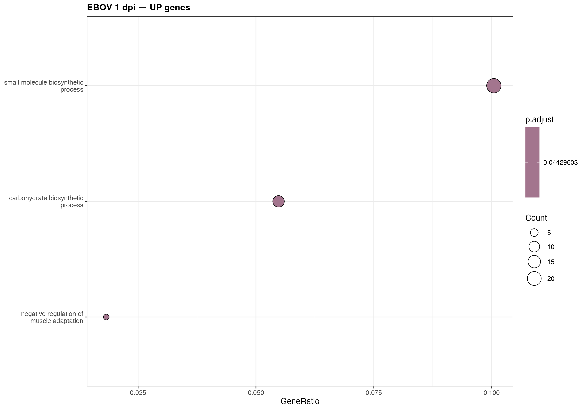
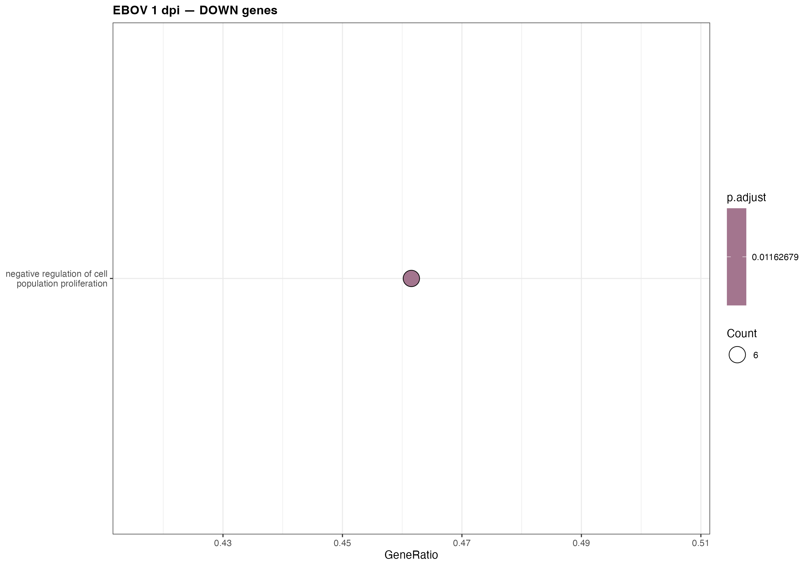
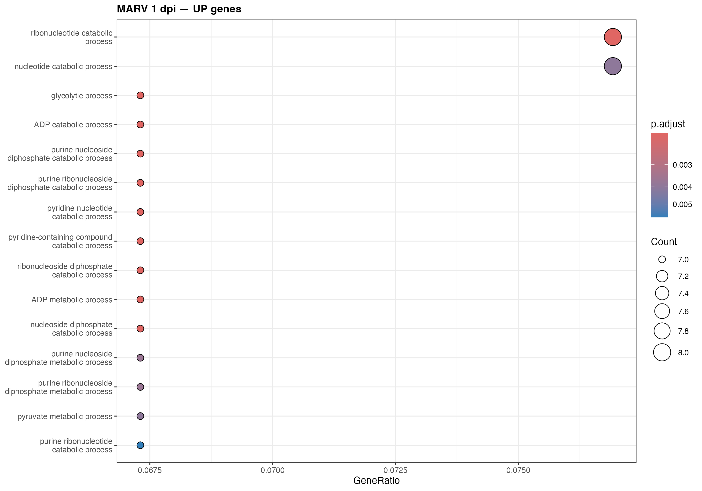
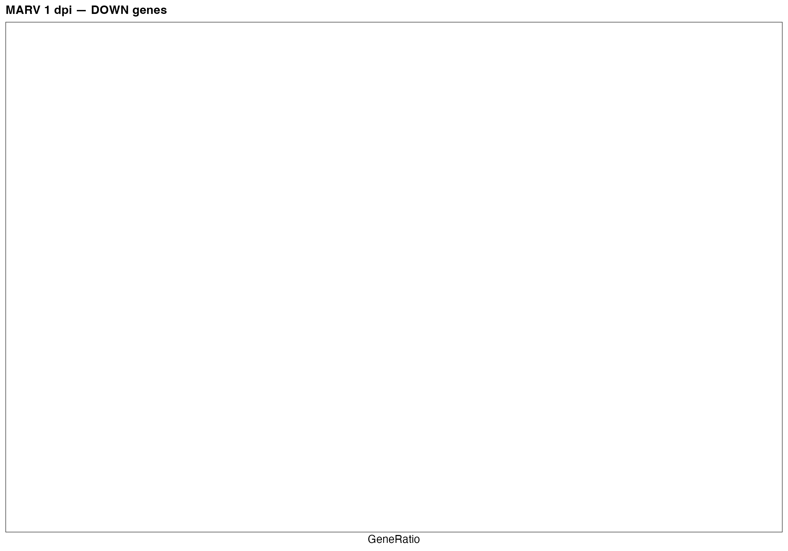
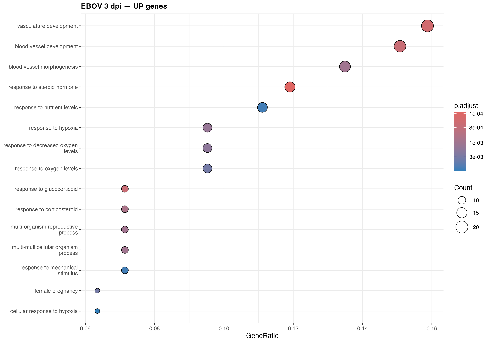
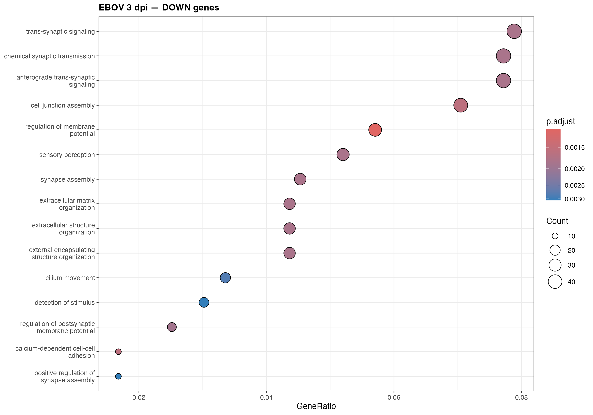
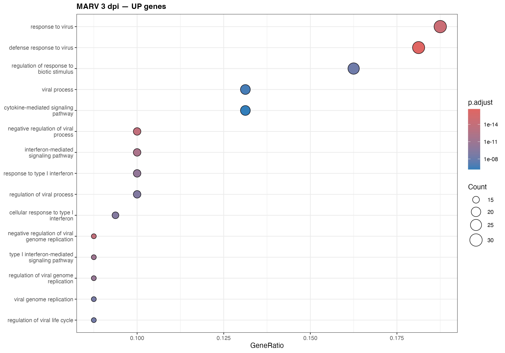
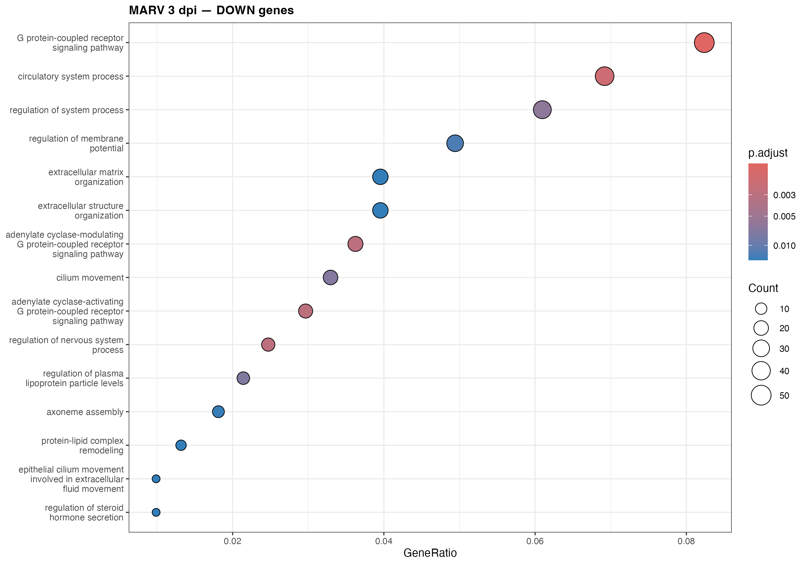
#Y-axis: the specific biological function
#X-axis (GeneRatio): the proportion of our
# upregulated (or downregulated) genes belonging to this function
#Size: number of genes involved
#Color : adjusted p-value (red = more significant in
#these specific graphs)
#When enrichment GO tests up and down regulated genes,
#it compares them to thousands of GO categories.
#However, when testing 10,000 categories simultaneously,
#several will appear "significant" purely by chance
#(p < 0.05)—simply by accident.
#This correction artificially increases
#the p-values; only the most significant
#categories will remain below the threshold
#Analysis:
#The 1 dpi data (for both MARV and EBOV)
#are rather uninformative. The signal is weak and
#lacks specificity. This makes sense, at 1 dpi,
#the response is in its early stages and not yet
#sufficiently organized to reveal a specific GO function.
# Hallmark analysis might pick up more signals; here,
#for EBOV 1 dpi (upregulated genes), we see "small molecule
# biosynthetic process," "carbohydrate biosynthetic process," and
#"negative regulation of muscle adaptation"—none of which
#provide much insight.
#The MARV 1 dpi (downregulated) set is completely empty; no
#functions were identified among the downregulated genes.
#In contrast, the 3 dpi data are interesting.
#EBOV DOWN — Very rich, consistent with the paper's narrative.
#We see terms like : "cell junction assembly,"
# "extracellular matrix organization,"
#"extracellular structure organization,"
#"cilium movement," and "regulation of membrane potential."
#This is exactly the signature of epithelial
#destruction mentioned in the paper:
#the cells lose their junctions and their structure.
#"These findings suggest compromised absorptive function and
#epithelial barrier integrity early in infection, which may underlie gastrointestinal symptoms commonly observed in filovirus
#disease." (page 9, fig 5)
#EBOV UP :
#"vasculature development",
#"blood vessel development",
#"response to hypoxia",
#"response to decreased oxygen levels",
#"response to glucocorticoid".
#these are details on Hypoxia also mentionned in the paper.
#MARV 3 dpi shows the clearest GO evidence of the entire project.
#UP: "response to virus", "defense response to virus",
#"interferon-mediated signaling pathway",
#"response to type I interferon",
#"cellular response to type I interferon",
#"negative regulation of viral genome replication"
#p-values : 1e-14, 1e-11 —
#extremely significant, with counts of 30 genes.
#This is the exact functional equivalent of your
#ISG cluster (MX1, IFIT1, ISG15 etc) from the volcano plot.
#DOWN:
#"G protein-coupled receptor signaling",
#"circulatory system process",
#"regulation of membrane potential",
#"extracellular matrix organization"
#Consistent with a cell whose normal
#functions are deteriorating under the
#stress of infection—somewhat similar to
#EBOV, but of a different nature, and
#apparently less focused on cell junctions
# We save the go results to csv files
export_go <- function(go_obj, output_file, contrast_label) {
if (is.null(go_obj) || nrow(go_obj@result) == 0) {
cat(" (no significant terms)\n")
return(invisible(NULL))
}
result_df <- go_obj@result %>%
dplyr::select(ID, Description, GeneRatio, BgRatio, pvalue, p.adjust, qvalue) %>%
dplyr::arrange(p.adjust) %>%
dplyr::mutate(contrast = contrast_label)
write.csv(result_df, output_file, row.names = FALSE)
cat(" ✓ Saved:", output_file,
"(", nrow(result_df), "terms )\n")
return(invisible(result_df))
}
# we export the go results
cat("\n=== Exporting GO enrichment results ===\n")go_ebov_d1_up_df <- export_go(go_ebov_d1$up,
file.path(tables, "GO_EBOV_1dpi_UP.csv"), "EBOV vs Mock 1 dpi UP")## ✓ Saved: /Users/corentinjeantils/Documents/EFREI_2026/genomics/test1/output/tables/GO_EBOV_1dpi_UP.csv ( 5206 terms )go_ebov_d1_dn_df <- export_go(go_ebov_d1$down,
file.path(tables, "GO_EBOV_1dpi_DOWN.csv"), "EBOV vs Mock 1 dpi DOWN")## ✓ Saved: /Users/corentinjeantils/Documents/EFREI_2026/genomics/test1/output/tables/GO_EBOV_1dpi_DOWN.csv ( 5206 terms )go_marv_d1_up_df <- export_go(go_marv_d1$up,
file.path(tables, "GO_MARV_1dpi_UP.csv"), "MARV vs Mock 1 dpi UP")## ✓ Saved: /Users/corentinjeantils/Documents/EFREI_2026/genomics/test1/output/tables/GO_MARV_1dpi_UP.csv ( 5206 terms )go_marv_d1_dn_df <- export_go(go_marv_d1$down,
file.path(tables, "GO_MARV_1dpi_DOWN.csv"), "MARV vs Mock 1 dpi DOWN")## ✓ Saved: /Users/corentinjeantils/Documents/EFREI_2026/genomics/test1/output/tables/GO_MARV_1dpi_DOWN.csv ( 5206 terms )go_ebov_d3_up_df <- export_go(go_ebov_d3$up,
file.path(tables, "GO_EBOV_3dpi_UP.csv"), "EBOV vs Mock 3 dpi UP")## ✓ Saved: /Users/corentinjeantils/Documents/EFREI_2026/genomics/test1/output/tables/GO_EBOV_3dpi_UP.csv ( 5206 terms )go_ebov_d3_dn_df <- export_go(go_ebov_d3$down,
file.path(tables, "GO_EBOV_3dpi_DOWN.csv"), "EBOV vs Mock 3 dpi DOWN")## ✓ Saved: /Users/corentinjeantils/Documents/EFREI_2026/genomics/test1/output/tables/GO_EBOV_3dpi_DOWN.csv ( 5206 terms )go_marv_d3_up_df <- export_go(go_marv_d3$up,
file.path(tables, "GO_MARV_3dpi_UP.csv"), "MARV vs Mock 3 dpi UP")## ✓ Saved: /Users/corentinjeantils/Documents/EFREI_2026/genomics/test1/output/tables/GO_MARV_3dpi_UP.csv ( 5206 terms )go_marv_d3_dn_df <- export_go(go_marv_d3$down,
file.path(tables, "GO_MARV_3dpi_DOWN.csv"), "MARV vs Mock 3 dpi DOWN")## ✓ Saved: /Users/corentinjeantils/Documents/EFREI_2026/genomics/test1/output/tables/GO_MARV_3dpi_DOWN.csv ( 5206 terms )# save degs to csv files
save_degs <- function(res, contrast_label, output_file) {
df <- as.data.frame(res) %>%
tibble::rownames_to_column("gene_symbol") %>%
dplyr::filter(!is.na(padj)) %>%
dplyr::mutate(
direction = dplyr::case_when(
padj < 0.05 & log2FoldChange > 1 ~ "UP",
padj < 0.05 & log2FoldChange < -1 ~ "DOWN",
TRUE ~ "NS"
),
contrast = contrast_label
) %>%
dplyr::select(gene_symbol, log2FoldChange, padj, direction, contrast) %>%
dplyr::arrange(padj)
write.csv(df, output_file, row.names = FALSE)
cat("✓", output_file, "—",
sum(df$direction == "UP"), "UP |",
sum(df$direction == "DOWN"), "DOWN\n")
}
cat("\n=== Exporting DEG lists ===\n")##
## === Exporting DEG lists ===save_degs(res_EBOV_d1_host, "EBOV vs Mock 1 dpi",
file.path(tables, "DEG_EBOV_1dpi.csv"))## ✓ /Users/corentinjeantils/Documents/EFREI_2026/genomics/test1/output/tables/DEG_EBOV_1dpi.csv — 274 UP | 19 DOWNsave_degs(res_MARV_d1_host, "MARV vs Mock 1 dpi",
file.path(tables, "DEG_MARV_1dpi.csv"))## ✓ /Users/corentinjeantils/Documents/EFREI_2026/genomics/test1/output/tables/DEG_MARV_1dpi.csv — 125 UP | 17 DOWNsave_degs(res_EBOV_d3_host, "EBOV vs Mock 3 dpi",
file.path(tables, "DEG_EBOV_3dpi.csv"))## ✓ /Users/corentinjeantils/Documents/EFREI_2026/genomics/test1/output/tables/DEG_EBOV_3dpi.csv — 177 UP | 967 DOWNsave_degs(res_MARV_d3_host, "MARV vs Mock 3 dpi",
file.path(tables, "DEG_MARV_3dpi.csv"))## ✓ /Users/corentinjeantils/Documents/EFREI_2026/genomics/test1/output/tables/DEG_MARV_3dpi.csv — 261 UP | 994 DOWN
This project aimed to characterize the host
transcriptional response in human colonic organoids
(HCOs) to two filoviruses—Ebola (EBOV) and Marburg
(MARV)—at 1 and 3 days post-infection, using dataset
GSE300073 and a DESeq2-based analysis pipeline.
Prior to biological interpretation, data integrity was
confirmed through several checks. Viral transcript counts
increased by two to three orders of magnitude between 1 and
3 days post-infection (dpi), indicating active replication.
One control sample (Mock) (MG-MA-18, 3 dpi) showed anomalous
viral reads;
PCA analysis resolved the ambiguity: its PC1 value
(−3.56) placed it clearly within the control range, while its
extreme PC2 value (+22.5) isolated it in the direction opposite
to the 3 dpi EBOV group.
A genuine infection would have shifted the sample toward
the EBOV group; consequently, it was classified as technical
noise rather than a true infection, a conclusion supported by
the heatmap of the most differentially expressed genes, which
confirmed its artifactual profile.
Key results :
At 1 dpi, EBOV and MARV induced convergent
responses characterized by modest upregulation,
indicating that the cells did not yet distinguish between
the two viruses.
By 3 dpi, the responses had diverged markedly.
MARV triggered a distinct interferon-stimulated gene (ISG) signature,
visible both in volcano plots and as the most significant result
of the Gene Ontology (GO) enrichment analysis.
In contrast, EBOV was characterized by massive downregulation
and the collapse of the initial upregulation, with GO terms
indicating a loss of epithelial structure.
Biological interpretation:
These contrasting profiles reflect two distinct viral
strategies. MARV adopts a direct confrontation strategy:
it allows the cell to trigger its interferon response and
activate interferon-stimulated genes (ISGs), which prove
insufficient to completely block replication. EBOV adopts
a camouflage and sabotage strategy: its viral proteins inhibit
interferon production upon detection, thus preventing ISG activation
and gaining time to replicate, at the cost of widespread epithelial
dysfunction.
The results are in close agreement with those of the study.
The induction of ISGs by MARV corresponds to the strong induction
reported (notably OASL, MX1, IFIT1, IFIT2, IFI6, and CXCL10;
p. 9, Fig. 5B), several of which (MX1, IFIT1, IFI6, OAS3)
were found here.
The inhibition of these same pathways by EBOV is consistent
with the data on page 7, and the GO signature associated with
epithelial disruption echoes the link established in the
article between EBOV infection, impaired barrier integrity,
and gastrointestinal symptoms.
Limitations. The absolute numbers of differentially expressed
genes (DEGs) differ somewhat from the published figures,
which is expected: the article relied on edgeR and limma,
while this pipeline used DESeq2, as these two approaches
employ different normalization and thresholding methods.
The counts also varied depending on the log2FC threshold applied.
I could have performed a GSEA (Gene Set Enrichment Analysis)
on the DESeq2 results.
GSEA is based on "Hallmark" gene sets and is performed
on the complete, ranked list of genes.
It utilizes a Hallmark database containing only around
fifty broader categories and incorporates *all* genes,
ranked from most upregulated to most downregulated
(without applying a significance threshold).
Even if individual genes within a pathway are not
statistically significant on their own, GSEA detects
the signal if they collectively show a slight shift
toward upregulation.
This makes GSEA more powerful
in this context, but was not performed as part of this analysis.
In summary, despite methodological differences,
the pipeline reproduced the study's central biological
conclusion: EBOV and MARV induce fundamentally opposing
immune dynamics in colonic organoids—interferon-mediated
defense for MARV versus immunosuppression and epithelial
alteration for EBOV.